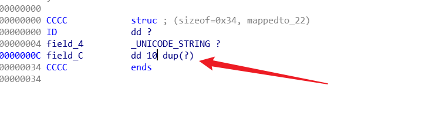
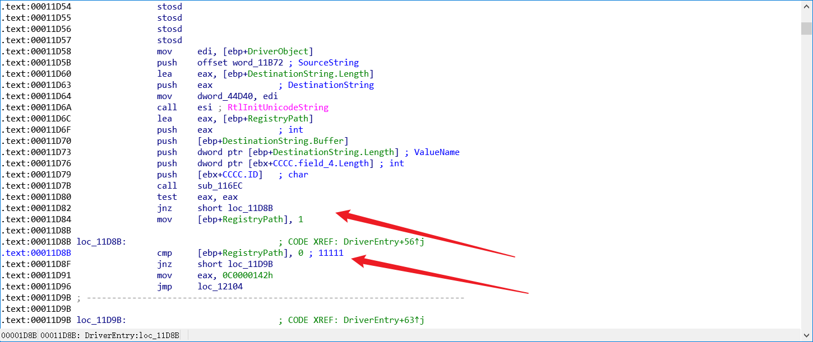

# 前言
为什么学习 IDA，滴水中级班课程大部分时间是在分析系统内核文件，用到的工具主要就是 IDA。
最近在看中级班课程，发现基础太烂了，自闭 ing……
IDA 是一款静态分析工具。
# 正文
# 打开文件、关闭文件
可以直接打开一个文件，也可以单独打开 IDA。
单独打开 IDA 后再打开文件，也可以直接把文件拖到 IDA 中。
我们直接点击 OK。
加载符号链接。
这时文件已经正确打开
接下来是关闭文件，关闭文件是需要注意的，上图我们可以发现，在调试文件下发生成了几个文件，这是 IDA 的要用到的数据库文件。
当我们要关闭文件的时候
如果不打包的话数据库文件还是分着放，如果选择打包，则会生成一个 idb 文件。
在分析文件时都会修改很多东西，修改的内容会保存在 idb 文件里面，以后打开文件，就不用打开源文件了，可以直接打开这个 idb 文件。
当文件越来越大时，可以勾选收集垃圾，来删除不必要的内容。
最后一个选项挺重要的，比如说某次我在 IDA 文件中做了很多操作后，我不想要这次的操作了，这时退出的时候就可以选中不保存数据库，这次的操作就不会保存，还停留在文件打开之前的样子。这是在 IDA 中放弃错误操作的唯一的办法。
# 窗口介绍：图形、文本、其他窗口介绍
CTRL + 滚轮 放大，放小
空格 切换图形 / 文本界面
IDA View-A 反汇编窗口
Hex View-A 十六进制窗口
Imports 导入表函数窗口
Exports 导出函数窗口
Structures 结构体窗口 IDA 识别出来的当然是有限的的，还有很多识别不出来的，我们可以在这个窗口中创建。
等等窗口，可以在工具栏调用出来
# 显示硬编码 -> ACDU 指令
并没有显示硬编码
设置显示出硬编码
学习过硬编码的任都知道，一行最多是十六个字节，所以这里设置的再多，也会被 IDA 修改为 16。
绝大多数 IDA 能正常的够把硬编码转换成汇编指令。
但是当需要分析的程序经过了处理，IDA 就识别不了了。
明明是数据的部分，却被识别为指令、明明是指令的部分，却被识别为数据。
这就需要 ACDU 这几个命令了。
A: 把当前的数据用字符串的形式显示。
C: 把当前的数据用代码的形式显示。
D: 把当前的数据用数据的形式显示。
U: 把当前的数据用原始的字节的的形式显示。
以这段 nop 指令为例。
A 命令
C 命令
D 命令
按一次 D 以一个字节显示 db , 再按一次以 dw , 再按一次以 dd 显示。
U 命令
# 跳转指令: G
直接按 G 键 然后输入我们要跳转的地址
# 搜索指令：ALT + T
ALT + T 搜索某一个关键词、函数名。
# 改名字：N
这个命令非常重要。
真正的逆向分析，就是弄清楚这个函数做了什么事情，那么当我们分析完后，就要给这个函数起一个名字了，这个名字一般都代表这这个函数的功能。所以起名字的过程就是逆向分析的过程。
# 创建结构体、修改全局变量、修改局部变量
当我们分析出了一个结构体，但 IDA 中并没有识别出这个结构体，那我们就要自己添加结构体了。
点开 structures 视图窗口
然后选择添加结构体类型
随便起个名字叫 CCCC
# 在结构体中添加成员
按 D 键
这个结构体成员的名字和类型都是可以改的，修改类型可以接着按 D 键，修改名字按 N 键
# 如果结构体的成员也是一个结构体
新增一个成员后，按 ALT + Q 就会列出当前已经记录的结构体
# 如果第三个成员是 DWORD 数组
先新建一个 DWORD 类型的成员，然后右键选择数组，输入数组的大小确定。
结果：

# 修改全局变量
创建这个结构体后，我们就可以在 IDA 中引用这个结构体了
这是一个 IDA 自己识别的一个全局变量
双击跟进去查看
发现它是一个 dd 类型的变量，我们假设它的类型是一个结构体，那我们把它的类型改为我们创建的结构体，按 ALT + Q 选择结构体。
变量的名字也是可以改的
可以发现我们已经修改了全局变量的类型，并且 IDA 也自动识别了用的是结构体中的那个成员。
# 修改局部变量
比如我们发现这个 ebx 就是一个结构体，那我们选中它后按 T
这样我们就在局部变量里面引用了自己定义的结构体
# 注释
IDA 里面的注释是非常重要的。
- 直接按
;
这种注释有一个特点就是：任何往这个地方跳的地方，IDA 都会在那个地方再显示一份，这有好处也有坏处，你希望它显示那它就是好的，你不希望它显示那它就是不好，显示的话如果注释多了，就会显得特别乱。
:注释
冒号注释，只显示一次。

- 像正向写代码一样给函数写注释
选中函数名，按注释命令就可以像正向写代码一样给函数写注释描绘函数的基本特征，并且会生成在汇编指令上方。
# 交叉引用
这也是逆向分析中经常用到的功能。
当我们想知道一个函数都被哪里引用的时候可以看这里
但是这里显示的并不全。
我们可以选中这个函数名，在工具栏中打开交叉引用视图窗口
这里就会显示出所有引用这个函数的地方
上面演示的是一个函数的交叉引用，变量也可以被查看在哪里被引用了。
# 练习说明
- 掌握 IDA 基本操作
- 汇编逆向 C 语言
SiCore.sys 文件整理。
把每一个函数的汇编转换为 C 代码。